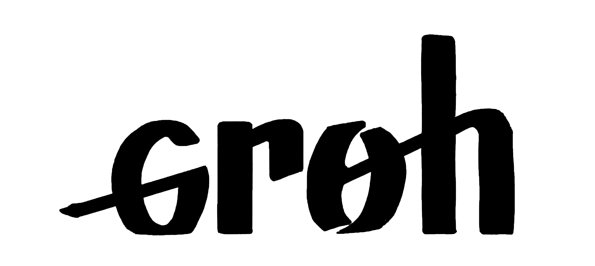
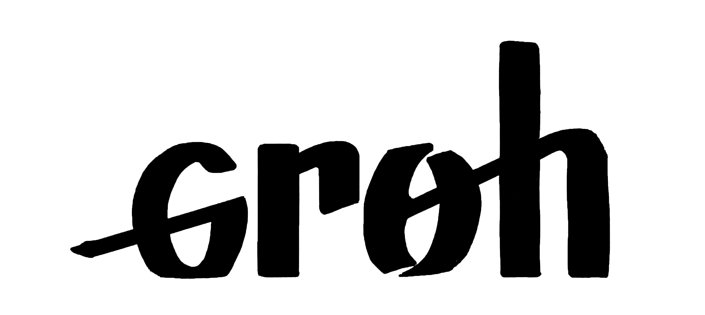
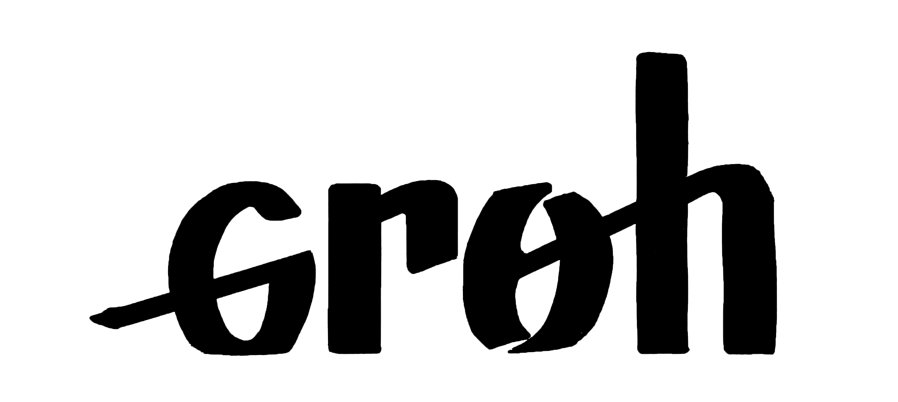
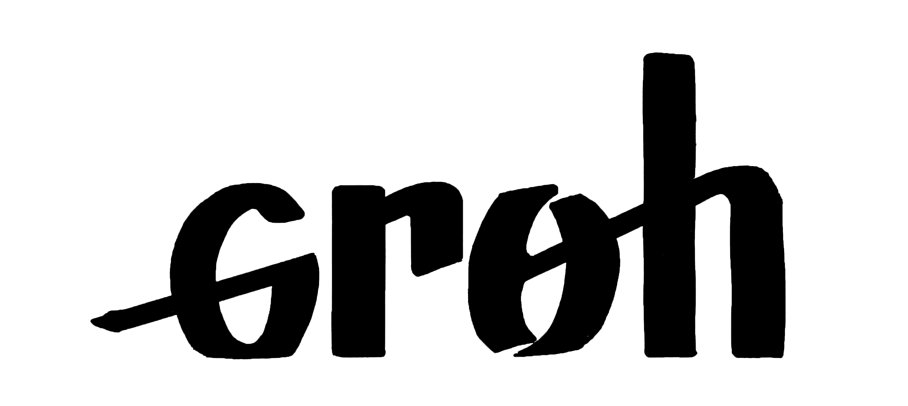

Following the instructions on the typecooker website created by Erik van Blokland, I carried out a number of typographic experiments, with the aim of becoming even more familiar with typeface design and its various specificities, such as different types of contrast. I particularly enjoyed trying out different tools like flat nibs, nibs, as well as different felts and inks. Also it’s a project that I’ll continue to nurture, and I’m currently working on an edition to bring together my different typographies.
En suivant les instructions du site Web typecooker créé par Erik van Blokland, j'ai réalisé un certain nombre d'expériences typographiques, dans le but de me familiariser encore plus avec la conception de caractères et ses diverses spécificités, telles que les différents types de contraste. J'ai particulièrement apprécié essayer différents outils tels que les plumes plates, les pointes, ainsi que différents feutres et encres. C'est aussi un projet que je vais continuer à nourrir, et je travaille actuellement sur une édition qui rassemblera mes différentes typographies.